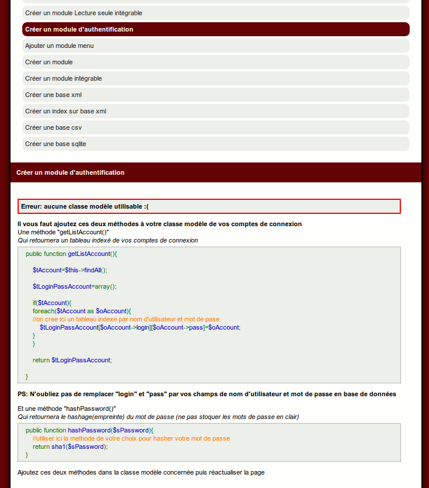
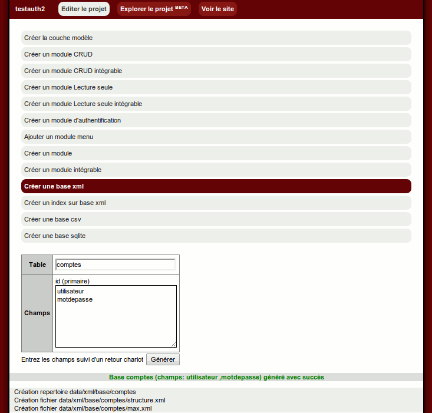
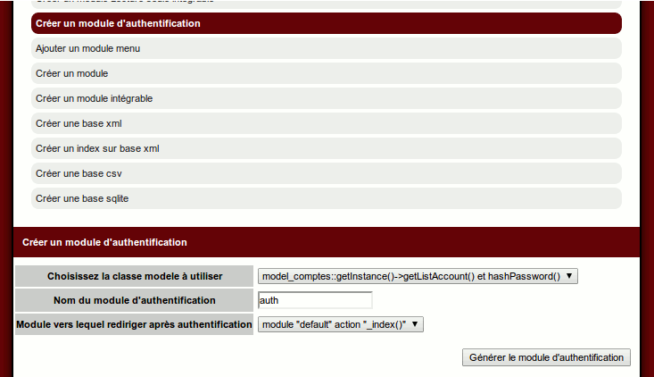
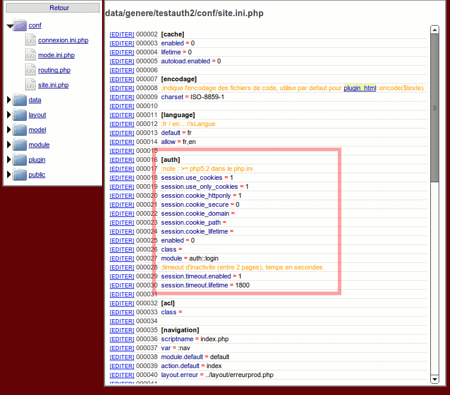
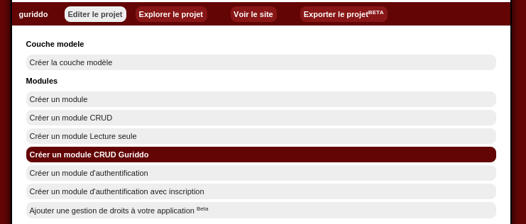
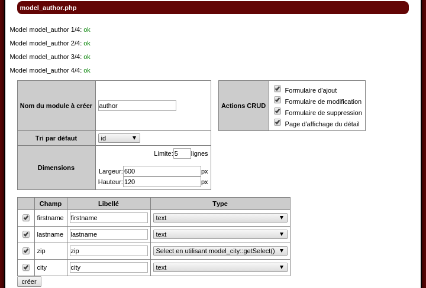
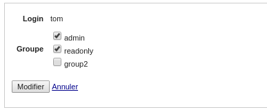

Tutoriaux
En utilisant le builder
Créer un nouveau siteCréer la couche modèle de votre site
Ajouter un menu à votre site
Ajouter un menu vertical à votre site [Bootstrap]
Ajouter une authentification
Enrichir le module d'authentification
Créer un module CRUD (Create Read Update Delete)
Créer un module CRUD intégrable (Create Read Update Delete)
Créer un module CRUD avec Guriddo (Create Read Update Delete)
Créer un module CRUD multi-ligne (Create Read Update Delete)
Ajouter une gestion de permissions multi-groupes (ACL)
Créer pour 2 tables: deux modules CRUD et intégrable liés
Sans utiliser le builder
Ajouter une authentication à une page/un modulePermettre l'upload d'un fichier
Vérifier les entrées d'un formulaire
Ajouter une verification particuliere
Ajouter une verification ponctuelle
Facilitez la création de formulaire
Gérer des permissions (ACL)
Utilisez des CRUD intégrables
Utiliser les jetons pour éviter les failles XSRF
Faire un site avec un cache html complet
Utiliser la barre de debug
Faire un webservice
Faire des menus déroulants liés
Generer des fichiers excel avec PhpExcel
Formulaire multi-step
Mot de passe oublié
Etendre le framework
Utiliser des classes Zend Framework 1Utiliser des classes Zend Framework 2
Utiliser des classes Zend Framework 3
Utiliser des classes Symfony 4
Implémenter un tableau Guriddo
Une question ? la FAQ est là pour ça
Créer un nouveau site
Installation
Télécharger le mkframework en cliquant sur le lien situé sur le site. Vous recuperez une archive au format zip.Décompressez la dans le repertoire web de votre serveur apache, (repertoire www/ ou htdocs/ selon votre environnement)
Dans ce tutoriel, on part du principe que vous avez installé le framework à la racine de votre repertoire web, il est donc accessible via l'adresse http://localhost/mkframework_v4_XX_XX/
Pour information le zip comprend le builder et la librairie du framework
Toutes les applications générées lient la librairie du builder (qui peut etre copié, deplacé... en n'oubliant pas de parametrer sa nouvelle adresse dans le fichier conf/site.ini.php)
Utilisation du builder pour créer une application
Ouvrez votre navigateur à l'adresse http://localhost/mkframework_v4_XX_XX/Cliquez sur l'onglet "Créer un projet"

Entrez le nom de l'application à créer, ici : blog

La checkbox "Générer avec exemples" permet d'indiquer si le builder doit créer une application vierge, ou un application contenant déjà quelques exemples.
Ces modules d'exemples permettent de vous faciliter l'apprentissage.
Cliquez sur le bouton "créer"
L'application mkbuilder va générer une nouvelle application vierge dans le répertoire Projects/blog

Créer la couche modèle de votre site
Création des tables en base de donnée
Pour l'exemple, nous utiliserons une base de donnée mysqlCommencez par executer ces trois requêtes de création de table.
CREATE TABLE `article` (
`id` int(11) NOT NULL auto_increment,
`titre` varchar(50) NOT NULL,
`resume` text NOT NULL,
`auteur_id` int(11) NOT NULL,
PRIMARY KEY (`id`)
);
CREATE TABLE `auteur` (
`id` int(11) NOT NULL auto_increment,
`nom` varchar(30) NOT NULL,
`prenom` varchar(30) NOT NULL,
PRIMARY KEY (`id`)
);
CREATE TABLE `comment` (
`id` int(11) NOT NULL auto_increment,
`text` text NOT NULL,
`article_id` int(11) NOT NULL,
PRIMARY KEY (`id`)
);
Paramétrer la connexion à la base de donnée
Lors de la création d'une nouvelle application, le buider créer une arborescence complète comprenant des librairies, des fichiers css, de config...On peut depuis le builder charger le fichier de configuration conf/connexion.ini.php de votre application.
Ce fichier permet de gérer plusieurs configuration de connexion: aussi bien plusieurs paramètres de connexion (user,base différente) que des bases différentes: mysql/postgresql...
Vous pouvez ainsi stocker vos articles sur mysql et vos user sur postgresql...
Pour paramétrer vos connexions le plus simplement du monde, editer le fichier conf/connexion.ini.php (situé dans Projects/blog)
Dans notre exemple, notre base de donnée mysql est installé en local
mysql.dsn="mysql:dbname=blog;host=127.0.0.1"
mysql.sgbd=pdo_mysql
mysql.hostname=127.0.0.1
mysql.database=blog
mysql.username=root
mysql.password=pass
Générer la couche modèle
Le framework étant basé sur une architecture MVC, il nous faut créer la couche M: Modèle qui nous permettra d'interagir avec notre source de donnée, ici notre base mysql.Pour cela rien de plus simple, cliquez sur l'onglet "Administrer les projets", cliquez ensuite sur votre projet, ici "blog"

Cliquez sur "Créer couche model"

Cliquez sur le lien de la configuration à utiliser, ici "mysql".
Vous verrez s'afficher la liste des tables trouvées suivi d'un menu deroulant permettant de designer la clé primaire.

Cliquez sur "generer" pour generer les fichiers de la couche modèle.

Voici par exemple la classe model article généré:
<?php
class model_article extends abstract_model{
protected $sClassRow='row_article';
protected $sTable='article';
protected $sConfig='mysql';
protected $tId=array('id');
public static function getInstance(){
return self::_getInstance(__CLASS__);
}
public function findById($uId){
return $this->findOne('SELECT * FROM '.$this->sTable.' WHERE id=?',$uId );
}
public function findAll(){
return $this->findMany('SELECT * FROM '.$this->sTable);
}
}
class row_article extends abstract_row{
protected $sClassModel='model_article';
/*exemple jointure
public function findAuteur(){
return model_auteur::getInstance()->findById($this->auteur_id);
}
*/
/*exemple test validation*/
private function getCheck(){
$oPluginValid=new plugin_valid($this->getTab());
/* renseigner vos check ici
$oPluginValid->isEqual('champ','valeurB','Le champ n\est pas égal à '.$valeurB);
$oPluginValid->isNotEqual('champ','valeurB','Le champ est égal à '.$valeurB);
$oPluginValid->isUpperThan('champ','valeurB','Le champ n\est pas supé à '.$valeurB);
$oPluginValid->isUpperOrEqualThan('champ','valeurB','Le champ n\est pas supé ou égal à '.$valeurB);
$oPluginValid->isLowerThan('champ','valeurB','Le champ n\est pas inférieur à '.$valeurB);
$oPluginValid->isLowerOrEqualThan('champ','valeurB','Le champ n\est pas inférieur ou égal à '.$valeurB);
$oPluginValid->isEmpty('champ','Le champ n\'est pas vide');
$oPluginValid->isNotEmpty('champ','Le champ ne doit pas être vide');
$oPluginValid->isEmailValid('champ','L\email est invalide');
$oPluginValid->matchExpression('champ','/[0-9]/','Le champ n\'est pas au bon format');
$oPluginValid->notMatchExpression('champ','/[a-zA-Z]/','Le champ ne doit pas être a ce format');
*/
return $oPluginValid;
}
public function isValid(){
return $this->getCheck()->isValid();
}
public function getListError(){
return $this->getCheck()->getListError();
}
}
?>
Créer un module CRUD (Create Read Update Delete)
Après avoir créé votre application, configurer son fichier de connexion et généré la partie model.Vous pouvez facilement créer un module qui vous permettra de créer des articles, les lister, les éditer et les supprimer.
On appelle aussi ça le CRUD : Create Read Update Delete, et la, le builder va vous y aider.
Pour cela cliquez sur "Créer un module CRUD"

Cliquez ensuite sur la classe modèle à utiliser: ici model_article

On voit sur cet écran la liste des champs de notre table, avec une checkbox permettant de chosir ceux à afficher dans notre CRUD.
On clique sur le bouton "créer"

Et voila le crud de votre table article est généré
Au menu:
- Create: un lien plus une page contenant un formulaire d'ajout
- Read: une page contenant un tableau listant les éléments de la table
- Update: un lien plus une page contenant un formulaire de modification
- Delete: un lien plus une page de confirmation de suppression

Créer pour 2 tables: deux modules CRUD et intégrable liés
Introduction
Imaginez un cas simple où vous avez deux tables complémentaires, par exemple des auteurs et leurs livresVous voulez ajouter des auteurs, puis dans chaque auteur lui ajouter une liste de livre
Imaginons les tables suivantes:
CREATE TABLE `Auteurs` (
`id` int(11) NOT NULL auto_increment,
`nom` varchar(50) NOT NULL,
`prenom` varchar(50) NOT NULL,
PRIMARY KEY (`id`)
);
CREATE TABLE `Livres` (
`id` int(11) NOT NULL auto_increment,
`titre` varchar(50) NOT NULL,
`auteur_id` int(11) NOT NULL,
PRIMARY KEY (`id`)
);
Dans le builder
Après avoir créé les tables en base de donnéesCréons la couche modèle pour les deux tables
Créons ensuite d'abord le CRUD de la table des Auteurs
Voyons le module CRUD habituel: Auteurs
Nous allons générer un module intégrable pour les Livres et l'intégré par exemple à la page "show"
Générons ce module CRUD intégrable pour Livres
note: notez bien que nous avons décoché auteur_id, nous le forcerons en fonction de l'auteur selectionné
Le builder nous demande d'ajouter à l'endroit souhaité le code suivant
//instancier le module
$oModuleLivres=new module_Livres;
//si vous souhaitez indiquer au module integrable des informations sur le module parent
//$oModuleExamplemodule->setRootLink('module::action',array('parametre'=>_root::getParam('parametre')));
//recupere la vue du module
$oView=$oModuleLivres->_index();
//assigner la vue retournee a votre layout
$this->oLayout->add('main',$oView);
Ouvrons le fichier main.php du module Auteurs module/Auteurs/main.php
Et ajoutons ce code dans l'action _show()
public function _show(){
$oAuteurs=model_Auteurs::getInstance()->findById( _root::getParam('id') );
$oView=new _view('Auteurs::show');
$oView->oAuteurs=$oAuteurs;
$this->oLayout->add('main',$oView);
//instancier le module
$oModuleLivres=new module_Livres;
//si vous souhaitez indiquer au module integrable des informations sur le module parent
$oModuleLivres->setRootLink('Auteurs::show',array('id'=>_root::getParam('id')));
//recupere la vue du module
$oView=$oModuleLivres->_index();
//assigner la vue retournee a votre layout
$this->oLayout->add('main',$oView);
}
En effet on a une url du type: index.php?:nav=Auteurs::show&id=1
note: nous avons utilisé la methode setRootLink qui indique au module intégrable les parametres du module dans lequel il est intégré, ici:
$oModuleLivres->setRootLink('Auteurs::show',array('id'=>_root::getParam('id') ));
Ce qui donne ceci
Le problème ici c'est que le module intégrables des Livres n'a pas conscience d'etre intégré dans celui des auteurs
Nous allons lui communiquer l'info de l'auteur selectionné
Modifions d'abord la méthode _show() du module Auteurs module/Auteurs/main.php
public function _show(){
$oAuteurs=model_Auteurs::getInstance()->findById( _root::getParam('id') );
$oView=new _view('Auteurs::show');
$oView->oAuteurs=$oAuteurs;
$this->oLayout->add('main',$oView);
//instancier le module
$oModuleLivres=new module_Livres;
//si vous souhaitez indiquer au module integrable des informations sur le module parent
$oModuleLivres->setRootLink('Auteurs::show',array('id'=>_root::getParam('id')));
//on communique au module Livres l'auteur selectionee
$oModuleLivres->auteur_id=$oAuteurs->id;
//recupere la vue du module
$oView=$oModuleLivres->_index();
//assigner la vue retournee a votre layout
$this->oLayout->add('main',$oView);
}
Et enfin nous modifions le module intégrable Livres générés pour prendre en compte cette variable auteur_id
module/Livres/mains.php
Ajout de la propriété auteur_id en public
class module_Livres extends abstract_moduleembedded{
public static $sModuleName='Livres';
public static $sRootModule;
public static $tRootParams;
//le parametre auteur_id public
public $auteur_id;
l'action de listage, on ajoute un appel à une nouvelle méthode findListByAuteur avec le parametre auteur_id (on modifiera ensuite la classe modèle Auteurs)
public function _list(){
$tLivres=model_Livres::getInstance()->findListByAuteur($this->auteur_id);
$oView=new _view('Livres::list');
$oView->tLivres=$tLivres;
return $oView;
}
ensuite il faut modifier la méthode processSave() pour forcer l'auteur_id au moment de l'enregistrement
private function processSave(){
if(!_root::getRequest()->isPost() or _root::getParam('formmodule')!=self::$sModuleName ){ //si ce n'est pas une requete POST on ne soumet pas
return null;
}
$oPluginXsrf=new plugin_xsrf();
if(!$oPluginXsrf->checkToken( _root::getParam('token') ) ){ //on verifie que le token est valide
return array('token'=>$oPluginXsrf->getMessage() );
}
$iId=module_Livres::getParam('id',null);
if($iId==null){
$oLivres=new row_Livres;
//a l'ajout d'un livre on force l'auteur_id
$oLivres->auteur_id=$this->auteur_id;
}else{
$oLivres=model_Livres::getInstance()->findById( module_Livres::getParam('id',null) );
}
(...)
Enfin plus qu'a ajouter la nouvelle méthode dans la classe modèle model_Livres
model/model_Livres.php
class model_Livres extends abstract_model{
(...)
public function findListByAuteur($auteur_id){
return $this->findMany('SELECT * FROM '.$this->sTable.' WHERE auteur_id=?',$auteur_id);
}
}
et
Ajouter un menu à votre site
Introduction
Dans votre application vous souhaitez ajouter un ou plusieurs menus.Dans votre module, par exemple article (fichier module/article/main.php)
Votre fichier doit ressembler à peu près à cela:
<?php
class module_article extends abstract_module{
public function before(){
$this->oLayout=new _layout('template1');
}
public function _index(){
//on considere que la page par defaut est la page de listage
$this->_list();
}
public function _list(){
$oArticleModel=new model_article;
$tArticle=$oArticleModel->findAll();
$oView=new _view('article::list');
$oView->tArticle=$tArticle;
$oView->tColumn=$oArticleModel->getListColumn();//array('id','titre');//
$this->oLayout->add('main',$oView);
}
(...)
L'idée d'ajouter un menu, revient à ajouter sur notre template un module à un emplacement particulier.
Le module menu (note pour inclure un module, il faut que celui-ci retourne sa vue remplie)
<?php
Class module_menu extends abstract_module{
public function _left(){
//votre tableau de lien contenant en cle le libelle du menu, et en valeur le couple module/action
$tLink=array(
'Articles' => 'article::list',
'Articles pagine' => 'article::listPagination',
'Prive' => 'prive::list',
);
//si vous utilisez une gestion de droits sur votre site
if(_root::getACL()->can('edit','acl') ){
$tLink['Manage accounts']='account::list';
$tLink['Manage groups']='group::list';
$tLink['Manage permission']='permission::list';
}
$oView=new _view('menu::index');
$oView->tLink=$tLink;
return $oView;
}
}
?>
Sa vue (fichier module/menu/view/index.php
<ul>
<?php foreach($this->tLink as $sLibelle => $sLink): ?>
<?php if(_root::getParamNav()==$sLink):?>
<li class="selectionne"><a href="<?php echo $this->getLink($sLink) ?>"><?php echo $sLibelle ?></a></li>
<?php else:?>
<li><a href="<?php echo $this->getLink($sLink) ?>"><?php echo $sLibelle ?></a></li>
<?php endif;?>
<?php endforeach;?>
</ul>
Pour cela deux solutions:
Solution 1: utiliser la methode static addModule( emplacement , couple module/action );
Par exemple pour ajouter l'action "left" du module "menu" à l'emplacement "navigation"
$this->oLayout->addModule('navigation','menu::left');
Solution 2: le framework gèrant les vues comme des objets manipulable, on peut instancier le module menu et récupérer sa vue "remplie"
Et dans votre module
$oModuleMenu=new module_menu;
$oViewMenu= $oModelMenu->_left();
$this->oLayout->add('navigation',$oViewMenu);
Ajouter un menu vertical à votre site [Bootstrap]
Ajouter un menu vertical à votre site [Bootstrap]
Introduction
Dans votre application "compatible Bootstrap" vous souhaitez ajouter un ou plusieurs menus.Modifiez votre layout ainsi:
<?php echo $this->load('menu') ?>
<div class="container theme-showcase" role="main">
<div class="row">
<div class="col-sm-3 col-sm-offset-1 blog-sidebar">
<?php echo $this->load('menuLeft') ?>
</div>
<div class="col-sm-8 blog-main">
<?php echo $this->load('main') ?>
</div>
</div>
</div>
Dans votre module, par exemple article (fichier module/article/main.php)
Votre fichier doit ressembler à peu près à cela:
<?php
class module_article extends abstract_module{
public function before(){
$this->oLayout=new _layout('bootstrap');
//on ajoute ici le chargement du menu de gauche:
$this->oLayout->addModule('menuLeft','menuLeft::list');
}
public function _index(){
//on considere que la page par defaut est la page de listage
$this->_list();
}
public function _list(){
$oArticleModel=new model_article;
$tArticle=$oArticleModel->findAll();
$oView=new _view('article::list');
$oView->tArticle=$tArticle;
$oView->tColumn=$oArticleModel->getListColumn();//array('id','titre');//
$this->oLayout->add('main',$oView);
}
(...)
Et le code du menu de gauche "menuLeft"
Son fichier module/menuLeft/main.php
<?php
class module_menuLeft extends abstract_moduleembedded{
public function _list(){
$oView=new _view('menuLeft::list');
return $oView;
}
}
Et sa vue:
Sa vue (fichier module/menuLeft/view/list.php
<ul class="nav nav-pills nav-stacked nav-pills-stacked-example">
<li role="presentation" class="active"><a href="#">Home</a></li>
<li role="presentation"><a href="#">Profile</a></li>
<li role="presentation"><a href="#">Messages</a></li>
</ul>
Vous pouvez avoir bien sur 2 menus: un en haut, par exemple généré via le Builder en plus de ce menu, vous aurez ainsi, une fois le module menu généré le fichier main.php suivant:
<?php
class module_article extends abstract_module{
public function before(){
$this->oLayout=new _layout('bootstrap');
//on ajoute ici le chargement du menu:
$this->oLayout->addModule('menu','menu::index');
//on ajoute ici le chargement du menu de gauche:
$this->oLayout->addModule('menuLeft','menuLeft::list');
}
public function _index(){
//on considere que la page par defaut est la page de listage
$this->_list();
}
public function _list(){
$oArticleModel=new model_article;
$tArticle=$oArticleModel->findAll();
$oView=new _view('article::list');
$oView->tArticle=$tArticle;
$oView->tColumn=$oArticleModel->getListColumn();//array('id','titre');//
$this->oLayout->add('main',$oView);
}
(...)
Ajouter une authentication à une page/un module
Ajouter une authentification signifie quatre choses:1. créer un model pour gérer les comptes de connexions (avec couple login/pass)
2. créer ce module qui gerera l'authentification
3. indiquer dans le fichier de config ce couple module/action qui gerera l'authentification
4. indiquer les pages où l'authentification est nécessaire
Etape 1: créer un model pour gérer les comptes de connexions (avec couple login/pass)
Commencons par creer un model "compte de connexion", ici "account"Pour l'exemple on stoquera les comptes de connexion dans une base mysql
Seront nécéssaire les champs login et mots de passe.
<?php
class model_account extends abstract_model{
protected $sClassRow='row_account';
protected $sTable='account';
protected $sConfig='mysql';
protected $tId=array('id');
public static function getInstance(){
return self::_getInstance(__CLASS__);
}
public function findById($uId){
return $this->findOne('SELECT * FROM '.$this->sTable.' WHERE id=?',$uId );
}
public function findAll(){
return $this->findMany('SELECT * FROM '.$this->sTable);
}
public function getListAccount(){
$tAccount=$this->findAll();
$tLoginPassAccount=array();
if($tAccount){
foreach($tAccount as $oAccount){
$tLoginPassAccount[$oAccount->login][$oAccount->pass]=$oAccount;
}
}
return $tLoginPassAccount;
}
public function hashPassword($sPassword){
return sha1($sPassword);
}
}
class row_account extends abstract_row{
protected $sClassModel='model_account';
/*exemple jointure
public function findAuteur(){
return model_auteur::getInstance()->findById($this->auteur_id);
}
*/
/*exemple test validation*/
private function getCheck(){
$oPluginValid=new plugin_valid($this->getTab());
/* renseigner vos check ici
$oPluginValid->isEqual('champ','valeurB','Le champ n\est pas égal à '.$valeurB);
$oPluginValid->isNotEqual('champ','valeurB','Le champ est égal à '.$valeurB);
$oPluginValid->isUpperThan('champ','valeurB','Le champ n\est pas supé à '.$valeurB);
$oPluginValid->isUpperOrEqualThan('champ','valeurB','Le champ n\est pas supé ou égal à '.$valeurB);
$oPluginValid->isLowerThan('champ','valeurB','Le champ n\est pas inférieur à '.$valeurB);
$oPluginValid->isLowerOrEqualThan('champ','valeurB','Le champ n\est pas inférieur ou égal à '.$valeurB);
$oPluginValid->isEmpty('champ','Le champ n\'est pas vide');
$oPluginValid->isNotEmpty('champ','Le champ ne doit pas être vide');
$oPluginValid->isEmailValid('champ','L\email est invalide');
$oPluginValid->matchExpression('champ','/[0-9]/','Le champ n\'est pas au bon format');
$oPluginValid->notMatchExpression('champ','/[a-zA-Z]/','Le champ ne doit pas être a ce format');
*/
return $oPluginValid;
}
public function isValid(){
return $this->getCheck()->isValid();
}
public function getListError(){
return $this->getCheck()->getListError();
}
}
?>
Etape 2: créer ce module qui gerera l'authentification
Appelons-le par exemple "auth"
<?php
class module_auth extends abstract_module{
public function before(){
//on active l'authentification
_root::getAuth()->enable();
$this->oLayout=new _layout('template1');
}
public function _login(){
$oView=new _view('auth::login');
$this->oLayout->add('main',$oView);
if(_root::getRequest()->isPost() ){
$sLogin=_root::getParam('login');
//on stoque les mots de passe hash en sha1 pour l'exemple
$sPass=model_account::getInstance()->hashPassword(_root::getParam('password'));
$tAccount=model_account::getInstance()->getListAccount();
//on va verifier que l'on trouve dans le tableau retourn par notre model "account"
//l'entre $tAccount[ login ][ mot de passe hash* ]
if(_root::getAuth()->checkLoginPass($tAccount,$sLogin,$sPass)){
_root::redirect('prive::list');
}
}
}
public function _logout(){
_root::getAuth()->logout();
}
public function after(){
$this->oLayout->show();
}
}
Etape 3: indiquer dans le fichier de config ce couple module/action qui gerera l'authentification
Dans le fichier conf/site.ini.php de votre site
[auth]
;note : >= php5.2 dans le php.ini
session.cookie_httponly=1
session.use_cookies = 1
session.use_only_cookies = 1
session.cookie_secure=1
enabled=0
class=plugin_auth
module=auth::login
session.timeout.enabled=1
session.timeout.lifetime=180
module=auth::login
note: tout le module "auth" sera accessible
Etape 4: indiquer les pages où l'authentification est nécessaire
Il suffit d'ajouter dans chaque methode "before" de module à restreindre
_root::getAuth()->enable();
Donc soit vous indiquer que tout un module est restreint en mettant cette appel dans before
Soit vous copier cette ligne dans la methode before d'une page particulière
Par exemple pour restreindre la page article::edit
//methode appele avant la page "edit"
public function before_edit(){
_root::getAuth()->enable();
}
public function _edit(){
//votre page "edit"
Ajouter une authentication via le builder
Le builder permet de vous aider à créer une authentification pour votre site
Cliquer sur le menu "Créer un module d'authentification"

Ici un message vous averti que le builder ne trouve pas de classe modèle utilisable.
Il faut en effet une table de gestion de comptes de connexion ainsi qu'une classe modèle la liant, mais ce n'est pas tout, comme vous pouvez le lire, il faut lui ajouter ces deux méthodes.
L'une pour retourner un tableau indexé, l'autre pour hacher un mot de passe (les mots de passe ne se stoque pas en clair)
Créons une table "comptes" avec 3 champs "id", "utilisateur" et "motdepasse"

Générons la classe modèle

Il ne vous reste plus qu'à copier les deux méthodes
Pensez bien pour la méthode à indiquer le bon champ pour le nom d'utilisateur et le mot de passe.
public function getListAccount(){
$tAccount=$this->findAll();
$tLoginPassAccount=array();
if($tAccount){
foreach($tAccount as $oAccount){
//on cree ici un tableau indexe par nom d'utilisateur et mot de pase
$tLoginPassAccount[$oAccount->login][$oAccount->pass]=$oAccount;
}
}
return $tLoginPassAccount;
}
public function getListAccount(){
$tAccount=$this->findAll();
$tLoginPassAccount=array();
if($tAccount){
foreach($tAccount as $oAccount){
//on cree ici un tableau indexe par nom d'utilisateur et mot de pase
$tLoginPassAccount[$oAccount->utilisateur][$oAccount->motdepasse]=$oAccount;
}
}
return $tLoginPassAccount;
}
Désormais si vous retournez sur le menu "Créer un module d'authentification"
Vous avez un menu déroulant listant votre classe modèle "comptes"
Un champ texte pour indiquer le nom du module d'authentification
Et enfin le couple module/action à rediriger après authentification.

En cliquant sur le bouton "Générer le module d'authentification", le builder créé un module "auth" et vous invite à passer la variable d'authentification à 1
Il y a même un lien pour vous permettre d'éditer le fichier de configuration

En suivant ce lien vous accédez via l'explorateur du projet au fichier de configuration conf/site.ini.php

Désormais si vous accédez à votre site, vous devez vous identifier.

Note: si vous souhaitez créer un utilisateur, vous pouvez creer une methode à cet effet dans le module "auth" (fichier module/auth/main.php)
public function _add(){
$oCompte=new row_comptes;
$oCompte->utilisateur='login';
$oCompte->motdepasse=model_comptes::getInstance()->hashPassword('pass');
$oCompte->save();
print "Utilisateur créé";
}
Une fois fait, vous pouvez vous loguer avec "login" comme nom d'utilisateur et "pass" comme mot de passe
note: pensez a bien renseigner le champ d'utilisateur et de mot de passe en fonction de votre base de donnée.
Enrichir le module d'authentification
Ce tutorial se base sur le fait que vous ayez généré un module d'authentification à l'aide du Builder (par exemple via ce tutorielCoté model
Ajoutez un champ de type entier "nbFail", il contiendra le nombre de tentative infructueuseOn l'incrementera à chaque erreur de mot de passe, et on bloquera le compte si ce nombre est supérieur à 3
Modification du module
Il suffit de modifier la méthode verifiant le mot de passe pour ajouter1. d'incrementer le champ "nbFail" pour determiner un seuil de blocage
2. de verifier ce nombre d'erreur pour savoir si le compte est bloquee
3. de remettre a zero ce compteur quand le mot de passe correct est renseigne (si le seuil n'est pas atteint)
private function checkLoginPass(){
//si le formulaire n'est pas envoye on s'arrete la
if(!_root::getRequest()->isPost() ){
return null;
}
$sLogin=_root::getParam('login');
$sPassword=_root::getParam('password');
if(strlen($sPassword) > $this->maxPasswordLength){
return 'Mot de passe trop long';
}
//on stoque les mots de passe hashe dans la classe model_auteur
$sHashPassword=model_auteur::getInstance()->hashPassword($sPassword);
$tAccount=model_auteur::getInstance()->getListAccount();
//AJOUT: verification si le compte est bloque
if(isset($tAccount[$sLogin]) ){
list($sAccountHashPassword, $oAccountFound) = each($tAccount[$sLogin]);
if($oAccountFound->nbFail > 3){
return 'Compte bloquee';
}
}
if(!_root::getAuth()->checkLoginPass($tAccount,$sLogin,$sHashPassword)){
//AJOUT: on incremente le nombre d'erreur
$oAccountFound->nbFail=(int)$oAccountFound->nbFail+1;
$oAccountFound->save();
return 'Mauvais login/mot de passe';
}else{
//AJOUT: on peut annuler le nombre de tentatives manquees
//quand elles sont superieur a 0 si l'utilisateur entre ses bons identifiants
if($oAccountFound->nbFail > 0 ){
$oAccountFound->nbFail=0;
$oAccountFound->save();
}
}
_root::redirect('default::index');
}
note: il faut prevoir d'intervenir en base de donnée pour remettre nbFail à zero pour debloquer le compte manuellement
Permettre l'upload d'un fichier
Introduction
Vous pouvez avoir besoin sur un site web par exemple de permettre à vos utilisateurs d'uploader leur photo de profil.Voici comment gérer un upload.
Dans notre exemple, nous partons de l'existence d'une table "account" (dont la clé primaire est "id") contenant un champ "profilPicture" et d'un module s'appellant "profil".
Coté vue
Ecrivez votre formulaire, en prenant bien soin de préciser l'attribut "enctype" dans votre balise "form".Editer le fichier module/profil/view/uploadProfilPicture.pho
<form action="" method="POST" enctype="multipart/form-data">
Photo de profil : <input type="file" name="profilPicture" />
<?php if($this->oAccount->profilPicture!=''):?>
<img src="<?php echo $this->oAccount->profilPicture ?>" />
<?php endif;?>
<input type="submit" value="Sauvegarder"/>
</form>
Coté controlleur
Dans l'action de cette page d'upload, nous allonsd'une part fare appel à la vue précedemment créée
et d'autre part gérer la reception, l'upload puis l'enregistrement du chemin de l'image dans le champ "profilPicture"
class module_private extends abstract_module{
public function before(){
(...)
//recuperation de l'id du compte de l'utilisateur connect
$this->id=_root::getAuth()->getAccount()->id;
}
(...)
public function _uploadProfilPicture(){
$this->checkUpload();
$oAccount=model_Account::getInstance()->findById( $this->id );
$oView=new _view('profil::uploadProfilPicture');
$oView->oAccount=$oAccount;
}
private checkUpload(){
if(!_root::getRequest()->isPost() ){ //si ce n'est pas une requete POST on ne soumet pas
return null;
}
$oAccount=model_Account::getInstance()->findById( $this->id );
$sColumn='profilPicture';
$oPluginUpload=new plugin_upload($sColumn);
if($oPluginUpload->isValid()){
$sNewFileName='data/upload/'.$sColumn.'_'.date('Ymdhis');
$oPluginUpload->saveAs($sNewFileName);
$oAccount->profilPicture=$oPluginUpload->getPath();
$oAccount->save();
}
}
}
Créer un module CRUD intégrable (Create Read Update Delete)
Cette partie permet de générer un module que vous pourrez intégrer dans un autre module.Pour cela cliquez sur "Créer un module CRUD intégrable"

Cliquez ensuite sur la classe modèle à utiliser: ici model_article

On voit sur cet écran la liste des champs de notre table, avec une checkbox permettant de chosir ceux à afficher dans notre CRUD.
On clique sur le bouton "créer"

Et voila le module crud intégrable de votre table article est généré
Au menu:
- Create: un lien plus une page contenant un formulaire d'ajout
- Read: une page contenant un tableau listant les éléments de la table
- Update: un lien plus une page contenant un formulaire de modification
- Delete: un lien plus une page de confirmation de suppression
Il vous suffit de copier dans le fichier main.php de votre module principal les lignes suivantes
//on instancie ce module integrable
$oModuleArticle=new module_article;
//on recuere la vue de ce module
$oViewArticle=$oModuleArticle->_index();
//on assigne cette vue a notre layout
$this->oLayout->add('main',$oViewArticle);
note: dans le cas de "poupées russes" de modules, il vous faut assigner la vue retournée au module, qui devra l'afficher
Ainsi pour un module A incluant un module B (intégrable) qui incluerait lui-même un module C (intégrable)
Au niveau du module B
$oViewB=new _view('monModuleB::notreVueB');
//on instancie le module integrable C
$oModuleC=new module_monModuleC;
//on recuere la vue de ce module C
$oViewModuleC=$oModuleC->_index();
//on assigne la vue C la vue B ;)
$oViewB->oViewModuleC=$oViewModuleC;
qu'on affichera dans la vue B ;)
<?php echo $this->oViewModuleC->show()?>
Vérifier les entrées d'un formulaire
Introduction
La vérification des entrées de formulaire se passe coté "model" elle passe par un retour d'un tableau des erreurs trouvées qui seront affichées par la suite dans la vue.Nous allons dans notre exemple ajouter des contrôle sur une table client
Coté model
Coté model, éditer votre classe row_client
class row_client extends abstract_row{
protected $sClassModel='model_client';
/*exemple jointure
public function findAuteur(){
return model_auteur::getInstance()->findById($this->auteur_id);
}
*/
/*exemple test validation*/
private function getCheck(){
$oPluginValid=new plugin_valid($this->getTab());
/* renseigner vos check ici
$oPluginValid->isEqual('champ','valeurB','Le champ n\est pas égal à '.$valeurB);
$oPluginValid->isNotEqual('champ','valeurB','Le champ est égal à '.$valeurB);
$oPluginValid->isUpperThan('champ','valeurB','Le champ n\est pas supé à '.$valeurB);
$oPluginValid->isUpperOrEqualThan('champ','valeurB','Le champ n\est pas supé ou égal à '.$valeurB);
$oPluginValid->isLowerThan('champ','valeurB','Le champ n\est pas inférieur à '.$valeurB);
$oPluginValid->isLowerOrEqualThan('champ','valeurB','Le champ n\est pas inférieur ou égal à '.$valeurB);
$oPluginValid->isEmpty('champ','Le champ n\'est pas vide');
$oPluginValid->isNotEmpty('champ','Le champ ne doit pas être vide');
$oPluginValid->isEmailValid('champ','L\email est invalide');
$oPluginValid->matchExpression('champ','/[0-9]/','Le champ n\'est pas au bon format');
$oPluginValid->notMatchExpression('champ','/[a-zA-Z]/','Le champ ne doit pas être a ce format');
*/
return $oPluginValid;
}
public function isValid(){
return $this->getCheck()->isValid();
}
public function getListError(){
return $this->getCheck()->getListError();
}
}
Dans notre exemple, nous allons vérifier que les noms et prenoms sont bien rempli et que l'email est correct
private function getCheck(){
$oPluginValid=new plugin_valid($this->getTab());
$oPluginValid->isNotEmpty('nom','Ce champ doit être saisi');
$oPluginValid->isNotEmpty('prenom','Ce champ doit être saisi');
$oPluginValid->isNotEmpty('email','Ce champ doit être saisi');
$oPluginValid->isEmailValid('email','Cet email est invalide');
return $oPluginValid;
}
Coté controleur
Lorsque vous soumettez un formulaire, vous pouvez verifier l'arrivée d'une requête "post" et choisir de la traiterC'est à ce moment la que l'on va créer notre futur enregistrement "client", l'enrichir des informations fournies via le formulaire, pour enfin demander si cet enregistrement est valide avant de l'enregistrer.
public function _new(){
$tMessage=$this->save();
$oView=new _view('client::new');
$oView->tMessage=$tMessage;
$this->oLayout->add('main',$oView);
}
public function save(){
if(!_root::getRequest()->isPost() ){ //si ce n'est pas une requete POST on ne soumet pas
return null;
}
$oClient=new row_client;
$tFields=array('nom','prenom','email');
foreach($tFields as $sField){
$oClient->$sField=_root::getParam($sField,null) ;
}
if($oClient->isValid()){
$oClient->save();
//une fois enregistre on redirige (vers la page d'edition)
_root::redirect('client::list');
}else{
return $oClient->getListError();
}
}
Enfin on verifie que l'enregistrement est "valide" (que les checks sont concluant), si ce n'est pas le cas, on retourne à l'action le tableau des messages d'erreurs.
Ce tableau d'erreur nous allons l'assigner à notre vue pour indiquer à l'utilisateur les champs en erreur.
Coté vue
Dans votre vue view/new.php
<form action="" method="POST">
<table>
<tr>
<th>Nom</th>
<td>
<input type="text" name="nom"/>
<?php if($this->tMessage and isset($this->tMessage['nom'])): echo implode(',',$this->tMessage['nom']); endif;?>
</td>
</tr>
<tr>
<th>Prénom</th>
<td>
<input type="text" name="prenom"/>
<?php if($this->tMessage and isset($this->tMessage['prenom'])): echo implode(',',$this->tMessage['prenom']); endif;?>
</td>
</tr>
<tr>
<th>Email</th>
<td>
<input type="text" name="prenom"/>
<?php if($this->tMessage and isset($this->tMessage['email'])): echo implode(',',$this->tMessage['email']); endif;?>
</td>
</tr>
</table>
<p><input type="submit" value="Ajouter" /></p>
</form>
note: attention: ce qui est retournée c'est un "tag" et non un message "ecrit", ca permet de choisir le message à afficher
Ajouter une verification particulière
Introduction
Lorsque vous utilisez la verification coté model, vous instanciez un objet issu de la classe plugin_valid, puis indiquez un ensemble de verification à faire.Ce qui se passe c'est une utilisation des methodes de la classe plugin_check.
Si vous souhaitez ajouter une verification particulière: par exemple verifier qu'un volume est divisible par 25 pour nos commandes.
Ajouter une methode de verification dans la classe plugin_check
Editez votre plugin plugin_checkEt ajoutez la methode suivante:
/**
* verifie si le $uValue est divisible par 25
* @access public
* @param undefined $uValue valeur
* @return bool retourne true/false selon
*/
public function isDivisibleBy25($uValue,$sErrorMsg){
if( $uValue % 25 ==0){
return true;
}
$this->sErrorMsg=$sErrorMsg;
return false;
}
Utilisez cette methode personnelle lors de la verification
Editez votre fichier model par exemple model_commande.php
private function getCheck(){
$oPluginValid=new plugin_valid($this->getTab());
$oPluginValid->isDivisibleBy('volume','Ce volume n\'est pas divisible par 25');
return $oPluginValid;
}
Ajouter une verification ponctuelle
Introduction
Vous pouvez ajouter ponctuellement une verification dans un formulaire en utilisant la méthode ko du plugin checkPar exemple en début de traitement de formulaire:
public function processSave(){
if(!_root::getRequest()->isPost() ){ //si ce n'est pas une requete POST on ne soumet pas
return null;
}
$oPluginXsrf=new plugin_xsrf();
if(!$oPluginXsrf->checkToken( _root::getParam('token') ) ){ //on verifie que le token est valide
return array('token'=>$oPluginXsrf->getMessage() );
}
//et ici avant le traitement du formulaire on peut ajouter des verifications
$oCheck=new plugin_valid(_root::getRequest()->getParamsPOST());
if( maCondition ){
$oCheck->ko('mon texte d erreur','le champ du formulaire');
}
if(!$oCheck->isValid()){
return $oCheck->getListError();
}
Facilitez la création de formulaire
Introduction
Pour vous simplifier l'ecriture de vos fomulaires, vous pouvez utiliser le plugin_htmlCreer un menu deroulant
Pour creer un menu deroulant par exemple de paysVous pouvez utiliser la methode getSelect du plugin_html
$oPluginHtml=new plugin_html;
$tMonth=array('','Janvier','Fevrier','Mars','Avril','Mai','Juin','Juillet','Aout','Septembre','Octobre','Novembre','Decembre');
echo $oPluginHtml->getSelect('pays',$tMonth);
<select name="pays">
<option value="0"></option>
<option value="1">Janvier</option>
<option value="2">Fevrier</option>
<option value="3">Mars</option>
<option value="4">Avril</option>
<option value="5">Mai</option>
<option value="6">Juin</option>
<option value="7">Juillet</option>
<option value="8">Aout</option>
<option value="9">Septembre</option>
<option value="10">Octobre</option>
<option value="11">Novembre</option>
<option value="12">Decembre</option>
</select>
$oPluginHtml=new plugin_html;
$tMonth=array('','Janvier','Fevrier','Mars','Avril','Mai','Juin','Juillet','Aout','Septembre','Octobre','Novembre','Decembre');
echo $oPluginHtml->getSelect('pays',$tMonth,3);
<select name="pays">
<option value="0"></option>
<option value="1">Janvier</option>
<option value="2">Fevrier</option>
<option select="select" value="3">Mars</option>
<option value="4">Avril</option>
<option value="5">Mai</option>
<option value="6">Juin</option>
<option value="7">Juillet</option>
<option value="8">Aout</option>
<option value="9">Septembre</option>
<option value="10">Octobre</option>
<option value="11">Novembre</option>
<option value="12">Decembre</option>
</select>
$oPluginHtml=new plugin_html;
$tMonth=array('','Janvier','Fevrier','Mars','Avril','Mai','Juin','Juillet','Aout','Septembre','Octobre','Novembre','Decembre');
echo $oPluginHtml->getSelect('pays',$tMonth,3,array('onChange'=>'goTo(this.value)'));
<select name="pays" onChange="goTo(this.value)">
<option value="0"></option>
<option value="1">Janvier</option>
<option value="2">Fevrier</option>
<option select="select" value="3">Mars</option>
<option value="4">Avril</option>
<option value="5">Mai</option>
<option value="6">Juin</option>
<option value="7">Juillet</option>
<option value="8">Aout</option>
<option value="9">Septembre</option>
<option value="10">Octobre</option>
<option value="11">Novembre</option>
<option value="12">Decembre</option>
</select>
Gérer des permissions (ACL)
Introduction
Si vous avez besoin de gérer des droits/permissions sur votre applicationBase de données
Il vous faut au minimum 3 tables : Account, Groupe et PermissionPar exemple, ici en se basant sur une base mysql
CREATE TABLE `Account` (
`id` int(11) NOT NULL auto_increment,
`login` varchar(50) NOT NULL,
`pass` varchar(50) NOT NULL,
`groupe_id` int(11) NOT NULL,
PRIMARY KEY (`id`)
);
CREATE TABLE `Groupe` (
`id` int(11) NOT NULL auto_increment,
`name` varchar(50) NOT NULL,
PRIMARY KEY (`id`)
);
CREATE TABLE `Permission` (
`id` int(11) NOT NULL auto_increment,
`action` varchar(50) NOT NULL,
`element` varchar(50) NOT NULL,
`allowdeny` varchar(50) NOT NULL,
`groupe_id` int(11),
PRIMARY KEY (`id`)
);
Passez par le builder pour générer les classes modèles de ces tables.
model_Account.php
model_Groupe.php (cochez créer une methode getSelect() avec id comme clé et name comme valeur)
et
model_Permission.php
Puis ajouter dans la classe model_Permission une methode findByGroup pour récupérer les permissions de groupe de l'utilisateur
public function findByGroup($group){
return $this->findMany('SELECT * FROM '.$this->sTable.' WHERE groupe_id=?',(int)$group);
}
Ajoutez dans la classe model_account une methode getListAccount qui permettra de vérifier les identifiants à la connexion.
public function getListAccount(){
$tAccount=$this->findAll();
$tLoginPassAccount=array();
foreach($tAccount as $oAccount){
$tLoginPassAccount[$oAccount->login][$oAccount->pass]=$oAccount;
}
return $tLoginPassAccount;
}
public function isUnique($login){
if( $this->findOne('SELECT * FROM '.$this->sTable.' WHERE login=?',$login) ){
return false;
}
return true;
}
Créer des groupes
En base de donnée entrez des groupes dans la base de donnée, par exemple "1" pour "read", et "2" pour "read-write"Paramétrez les permissions
Pensez à ajouter en base votre paramétrage de permissions: vous pouvez dans un premier temps générer un module CRUD sur votre table permission pour faciliter celui-ci.Pensez à la génération du module CRUD de sélectionnez pour le champ groupe_id "model_Groupe::getSelect()"
Module authentification
Créer via le builder un module "auth" avec trois actions: login,logout et inscriptionLe builder va créer
- un répertoire module/auth,
- un fichier module/auth/main.php ,
- un sous répertoire module/auth/view
- ainsi que 3 fichiers de vue module/auth/view/login.php, logout.php et inscription.php
Page de login
Renseignez le fichier auth/login.php ainsi:
<form action="" method="POST">
Nom d'utilisateur <input type="text" name="login" /><br/>
Mot de passe <input type="password" name="password" /><br />
<input type="submit" value="Se connecter" />
<p><?php echo $this->message?></p>
</form>
<p><a href="<?php echo _root::getLink('auth::inscription')?>">Inscription</a></p>
Page d'inscription
Renseignez le fichier auth/inscription.php ainsi:
<h1>Inscription</h1>
<form action="" method="POST">
<table>
<tr>
<th>Nom d'utilisateur</th>
<td><input type="text" name="login" value="<?php echo _root::getParam('login')?>" /></td>
</tr>
<tr>
<th>Mot de passe</th>
<td><input type="password" name="password" /></td>
</tr>
<tr>
<th>Confirmez le mot de passe</th>
<td><input type="password" name="password2" /></td>
</tr>
</table>
<input type="submit" value="S'enregistrer" />
<p><?php echo $this->message?></p>
<p><a href="<?php echo _root::getLink('auth::login')?>">Page de login</a></p>
</form>
Action login : méthode _login du module d'authentification
Editez le fichier module/auth/main.php comme suit:
class module_auth extends abstract_module{
(...)
public function _login(){
$message=$this->processLogin();
$oView=new _view('auth::login');
$oView->message=$message;
$this->oLayout->add('main',$oView);
}
private function processLogin(){
if(!_root::getRequest()->isPost()){
return null;
}
$sLogin=_root::getParam('login');
$sPass=sha1(_root::getParam('password'));
$tAccount=model_Account::getInstance()->getListAccount();
//on verifie que l'utilisateur existe bien
if(_root::getAuth()->checkLoginPass($tAccount,$sLogin,$sPass)){
$oAccount=_root::getAuth()->getAccount();
//recuperation de la liste de ses permissions
$tPermission=model_Permission::getInstance()->findByGroup($oAccount->groupe_id);
//on purge les permissions en session
_root::getACL()->purge();
//Au moment d'autentifier votre utilisateur, vous allez chercher sa liste de permissions
//boucle sur les permissions
if($tPermission)
foreach($tPermission as $oPermission){
if($oPermission->allowdeny=='ALLOW'){
_root::getACL()->allow($oPermission->action,$oPermission->element);
}else{
_root::getACL()->deny($oPermission->action,$oPermission->element);
}
}
//redirection vers votre partie privee
_root::redirect('default::index');
}else{
return 'login/mot de passe incorrect';
}
}
public function _inscription(){
$message=$this->processInscription();
$oView=new _view('auth::inscription');
$oView->message=$message;
$this->oLayout->add('main',$oView);
}
private function processInscription(){
if(!_root::getRequest()->isPost()){
return null;
}
if(!model_Account::getInstance()->isUnique(_root::getParam('login'))){
return 'Le login existe deja';
}else if(_root::getParam('password')!=_root::getParam('password2')){
return 'Les deux mots de passe doivent etre identique';
}
$oAccount=new row_Account;
$oAccount->login=_root::getParam('login');
$oAccount->pass=sha1(_root::getParam('password'));
$oAccount->groupe_id=1;//a l'inscription on cree des comptes de groupe seulement "read"
$oAccount->save();
return 'Votre compte a bien t cr';
}
public function _logout(){
_root::getAuth()->logout();
}
(...)
}
Remarque
1. Vous pouvez mettre des droits sur ce que vous voulez (un bouton, l'accès à une page...)2. Vous pouvez facilement gérer un model multi groupe en ajoutant une table de liaison entre groupe et account, il faudra simplement changer votre methode findByGroup dans la classe model_Permission
Verification d'un droit
Par exemple on a paramétré comme droit pour le groupe "read-write" la permissions suivante:
action:write
element:contact
allowdeny:ALLOW
<?php if(_root::getACL()->can('write','contact') ):?>
<a href="<?php echo _root::getLink('contact::add')?>">Ajouter un contact</a>
<?php endif;?>
Utilisez des CRUD intégrables
Introduction
Vous souhaitez utiliser un module intégrable au sein d'un autre module, par exemple on va permettre de saisir des livres à des auteurs.Base de donnée
On va commencer par créer deux tables: auteur et livre
CREATE TABLE `auteur` (
`id` int(11) NOT NULL auto_increment,
`nom` varchar(30) NOT NULL,
`prenom` varchar(30) NOT NULL,
PRIMARY KEY (`id`)
);
CREATE TABLE `livre` (
`id` int(11) NOT NULL auto_increment,
`titre` varchar(50) NOT NULL,
`auteur_id` int(11) NOT NULL,
PRIMARY KEY (`id`)
);
Couche modèle
Via le builder, générez la couche modèle en prenant bien soin pour la ligne "auteur", de cocher la case "Ajouter une méthode getSelect()*" et de selectionner "id" comme clé et "nom" comme valeurAjoutez dans la classe model/model_livre.php une methode qui retournera uniquement les livres de l'auteur sélectionné
public function findAllByAuteur($auteur_id){
return $this->findMany('SELECT * FROM '.$this->sTable.' WHERE auteur_id=?',$auteur_id );
}
Module CRUD auteur
Via le builder, sélectionnez "Créer un module CRUD", cliquez sur "model_auteur" puis pressez le bouton "créer"Module CRUD intégrable livre
Dans le builder, cliquez sur "Créer un module CRUD intégrable [beta]",sélectionnez "model_livre",
indiquez pour le champ "auteur_id" via le menu déroulant "Select en utilisant model_auteur::getSelect()"
puis pressez le bouton "créer"
Modifions sa méthode de liste afin qu'elle liste uniquement les livres de l'auteur sélectionné
Editez la methode _list() du fichier module/livre/main.phpRemplacez
$tLivre=model_livre::getInstance()->findAll();
$tLivre=model_livre::getInstance()->findAllByAuteur(_root::getParam('id'));
Forcons le livre ajouté pour qu'il appartienne à l'auteur sélectionné lors d'un ajout
Editez la methode _save() du fichier module/livre/main.phpOn va y ajoutez le fait de forcer l'auteur dans le cas d'une création
Remplacez
if($iId==null){
$oLivre=new row_livre;
}else{
$oLivre=model_livre::getInstance()->findById( module_livre::getParam('id',null) );
}
if($iId==null){
$oLivre=new row_livre;
$oLivre->auteur_id=_root::getParam('id');
}else{
$oLivre=model_livre::getInstance()->findById( module_livre::getParam('id',null) );
}
On va également supprimer le champ auteur_id du formulaire d'ajout, en editant le fichier module/livre/view/new.php
Remplacez
<table class="tb_new">
<tr>
<th>titre</th>
<td><input name="titre" /><?php if($this->tMessage and isset($this->tMessage['titre'])): echo implode(',',$this->tMessage['titre']); endif;?></td>
</tr>
<tr>
<th>auteur_id</th>
<td><?php echo $oPluginHtml->getSelect('auteur_id',$this->tJoinmodel_auteur)?><?php if($this->tMessage and isset($this->tMessage['auteur_id'])): echo implode(',',$this->tMessage['auteur_id']); endif;?></td>
</tr>
</table>
<table class="tb_new">
<tr>
<th>titre</th>
<td><input name="titre" /><?php if($this->tMessage and isset($this->tMessage['titre'])): echo implode(',',$this->tMessage['titre']); endif;?></td>
</tr>
</table>
Ajoutons le module intégrable "livre" dans la methode "_show()" du module auteur
Copiez le code généré en ajoutant une precision sur le module parent avec la méthode "setRootLink"
//instancier le module
$oModuleLivre=new module_livre;
//recupere la vue du module
$oView=$oModuleLivre->_index();
//assigner la vue retournee a votre layout
$this->oLayout->add('main',$oView);
Ce qui donnera:
public function _show(){
$oAuteur=model_auteur::getInstance()->findById( _root::getParam('id') );
$oView=new _view('auteur::show');
$oView->oAuteur=$oAuteur;
$this->oLayout->add('main',$oView);
//instancier le module
$oModuleLivre=new module_livre;
//on indique au module integrable les elements du module parent
$oModuleLivre->setRootLink('auteur::show',array('id'=>_root::getParam('id')));
//recupere la vue du module
$oView=$oModuleLivre->_index();
//assigner la vue retournee a votre layout
$this->oLayout->add('main',$oView);
}
Conclusion
Ainsi, on va pouvoir ajouter des auteurs, et leur ajouter des livres facilement
Utiliser des classes Zend Framework 1
Introduction
Si vous avez besoin d'utiliser une classe Zend Framework 1, il vous suffit de faire la chose suivante.Utilisation
Il vous suffit d'ajouter le code suivant dans votre fichier index.php
/* decommenter pour utiliser zendframework a partir de la 1.12*/
set_include_path(get_include_path() . PATH_SEPARATOR .'/chemin/vers/ZendFramework-1.12.0/library/');
require_once 'Zend/Loader/Autoloader.php';
$autoloader = Zend_Loader_Autoloader::getInstance();
$autoloader->setFallbackAutoloader(false);
Ensuite il vous suffira naturellement d'instancier les classes nécessaires, par exemple
<?php
$oZendDate=new Zend_Date();
$oZendDate->add('1', Zend_Date::HOUR);
print $oZendDate->toString('d MMM Y');
Utiliser des classes Zend Framework 2
Introduction
Si vous avez besoin d'utiliser une classe Zend Framework 2, il vous suffit de faire la chose suivante.Utilisation
Il vous suffit d'ajouter le code suivant dans votre fichier index.php
/* decommenter pour utiliser zendframework a partir de la 1.12*/
set_include_path(get_include_path() . PATH_SEPARATOR .'/chemin/vers/ZendFramework-2.1.5/library/');
require_once 'Zend/Loader/StandardAutoloader.php';
$loader = new Zend\Loader\StandardAutoloader();
$loader->registerNamespace('Zend', 'Zend/')
->setFallbackAutoloader(true);
$loader->register();
Ensuite il vous suffira naturellement d'instancier les classes nécessaires, par exemple
<?php
$oZendDate=new Zend\Stdlib\DateTime();
print $oZendDate->format('d M Y');
Utiliser des classes Zend Framework 3
Introduction
Si vous avez besoin d'utiliser une classe Zend Framework 3, il vous suffit de faire la chose suivante.Utilisation
Il vous suffit de faire 2 choses:1. installez Zend Framework 3 en utilisant composer
Pour cela, créez un fichier "composer.json" à la racine de votre projet mkf
{
"name": "votreProjet",
"description": "votre projet",
"type": "project",
"prefer-stable": true,
"require": {
"php": "^5.6 || ^7.0",
"zendframework/zend-component-installer": "^1.0 || ^0.7 || ^1.0.0-dev@dev",
"zendframework/zend-mvc": "^3.0.1",
"zfcampus/zf-development-mode": "^3.0"
}
}
composer install
Ensuite il faut ajouter le code suivant au début de votre fichier index.php
include __DIR__ . '/../vendor/autoload.php';
Enfin il vous suffira naturellement d'instancier les classes nécessaires, par exemple dans votre module ou ailleurs:
<?php
$validator = new Zend\Validator\EmailAddress();
if ($validator->isValid($email)) {
print "email ok";
} else {
foreach ($validator->getMessages() as $messageId => $message) {
printf("Validation en erreur '%s': %s\n", $messageId, $message);
}
}
Utiliser des classes Symfony 4
Introduction
Si vous avez besoin d'utiliser une classe Symfony 4, il vous suffit de faire la chose suivante.Utilisation
Il vous suffit de faire 2 choses:1. installez Symfony 4 en utilisant composer
Pour cela, créez un fichier "composer.json" à la racine de votre projet mkf
{
"name": "votreProjet",
"description": "votre projet",
"type": "project",
"prefer-stable": true,
"require": {
"php": "^5.6 || ^7.0",
"symfony/framework-bundle": "^4.2",
"symfony/validator": "^4.2"
}
}
composer install
Ensuite il faut ajouter le code suivant au début de votre fichier index.php
include __DIR__ . '/../vendor/autoload.php';
Enfin il vous suffira naturellement d'instancier les classes nécessaires, par exemple dans votre module ou ailleurs:
<?php
$myString='';
$validator = \Symfony\Component\Validator\Validation::createValidator();
$violations = $validator->validate($myString, [
new \Symfony\Component\Validator\Constraints\NotBlank(),
]);
if (0 !== count($violations)) {
foreach ($violations as $violation) {
echo $violation->getMessage().'<br>';
}
}else{
print "myString notBlank";
}
Utiliser les jetons pour éviter les failles XSRF
Introduction
Pour se prémunir des failles XSRF, on passe par l'utilisation des jetons: lors de la création du formualire, on créé un jeton, et lorsque celui-ci est envoyé on vérifie que le jeton est le même.Celui-ci doit donc être unique ;) Plus d'informations sur le XSRF ici: http://fr.wikipedia.org/wiki/Cross-site_request_forgery
Phase 1: Coté controlleur
Lors de la création de la vue contenant le formulaire, on créé un jeton avec le plugin plugin_xsrfOn passe celui-ci à notre vue
Fichier module/article/main.php
public function _new(){
//on cr une vue
$oView=new _view('article::new');
//on instancie un jeton
$oPluginXsrf=new plugin_xsrf();
//on assigne ce jeton la vue
$oView->token=$oPluginXsrf->getToken();
//on assigne le tableau de message la vue
$oView->messageToken=$messageToken;
//on ajoute la vue au layout
$this->oLayout->add('main',$oView);
}
Phase 2: coté vue
On ajoute un champ caché contenant ce jeton, on affichera également les messages du jeton si celui-ci est érronéFichier module/article/view/new.php
<input type="hidden" name="token" value="<?php echo $this->token?>" />
<?php if($this->messageToken and $this->messageToken!=''): echo $this->messageToken; endif;?>
Phase 3: coté traitement du formulaire
Lors de l'envoi du jeton, on vérifie que celui-ci est correcte, et on renvoie le message d'erreur $messageToken (ensuite assigné à la vue)
private function process(){
$messageToken=null;
//traitement du formulaire
if(!_root::getRequest()->isPost()){
//si aucun formulaire envoye on renvoi null
return null;
}
$oPluginXsrf=new plugin_xsrf();
if(!$oPluginXsrf->checkToken( _root::getParam('token') ) ){ //on verifie que le token est valide
//si il est invalide, on renvoie le message d'erreur
$messageToken= $oPluginXsrf->getMessage();
return $messageToken;
}
(...)
//traitement normal du formulaire (enregistrement en base...)
}
public function _new(){
//appel la mthode de traitement du formulaire, et rcupration du message de token
$messageToken=$this->process();
//on cr une vue
$oView=new _view('article::new');
//on instancie un jeton
$oPluginXsrf=new plugin_xsrf();
//on assigne ce jeton la vue
$oView->token=$oPluginXsrf->getToken();
//on assigne le tableau de message la vue
$oView->messageToken=$messageToken;
//on ajoute la vue au layout
$this->oLayout->add('main',$oView);
}
Faire un site avec un cache html complet
Introduction
Dans le cas de beaucoup de site, le contenu change peu (moins de 10 fois par jour), c'est le cas par exemple des blogs, ou des sites institutionnels.Dans ces cas là certains laisse le site requeter en permanence la base de donnée malgré le fait que cette donnée ne change pas, d'autres pense à mettre des mécanisme de cache de zone en place...
Mais pour ces mécanismes de cache, on utilise tout de même du php avec des accès i/o pour verifier la valididté du cache...
Ici je vais vous indiquer comment faire un site dynamique (modifiable avec un backoffice) mais dont les clients ne requeterons que des pages html (pas de process php, pas de requete en base de donnée)
Les avantages:
- base de donnée peu solicité: juste à la génération de cache et lors de la modification de données
- de très bonnes performances, apache ne faisant que retourner de simples pages html
- coté sécurité: aucune faille xss,xsrf, nullbyte, sql injection ou autre: le client n'a accès qu'à des pages html
Présentation de l'architecture
Le site se divise en 2: d'un coté le site "backoffice" qui est basé sur le mkframework et va intéragir avec notre base de donnéeDe l'autre notre site public "html", celui qui va être visité par nos visiteurs ainsi que les moteurs de recherche
Partie publique
Crééz sur votre serveur un repertoire web qui contiendra le cache de votre site, pensez bien à ajouter vos css et autres images de présentation/contenu.Par exemple /var/www/monSite
Partie backoffice
De ce coté là, faites votre site "normalement" avec les CRUDs nécéssaires... pour administrer vos données, n'oubliez pas le module d'authentification.Faites également votre partie publique: le site tel qu'il devra être affiché pour l'internaute
Une chose diffère par la suite: dans la partie enregistrement de votre donnée en base, vous allez générer le cache de votre site en vous appuyant sur les modules publiques de votre site
Par exemple pour un blog:
Créer les modules CRUD avec un préfixe "admin" et les modules d'affichage en lecture seule avec un prefixe "public"
Vous avez donc 3 modules:
- adminArticle (permet de creer des nouveaux articles)
- adminAuteur (permet de créer les auteurs)
- publicArticle (permet de lister et d'afficher les articles en détail)
Url rewriting
Avant de generer notre cache, il faudrait définir des règles d'url rewriting utilisant des adresses plus propre qui seront utilisées pour créer les pages htmlEditez votre fichier conf/site.ini.php et indiquer dans la section urlrewriting
[urlrewriting]
enabled=1
<?php
$tab=array(
'index.html' => array(
'nav'=>'publicArticle::list',
),
'article_:id:.html' => array(
'nav'=>'publicArticle::show',
'tParam' => array('id')
),
'404' => array('nav'=>'publicArticle'),
);
L'autre utilise article_ suivi de l'id de l'article à afficher via la méthode _show du même module
Génération du cache
Imaginons deux méthodes dans publicArticle: _list() et _show()Vous pouvez dupliquer votre méthode _list pour faire une methode qui generera le cache:
public function generateCacheList(){
//on appelle la methode before(),
//comme le ferait le framework
//pour crer le layout, charger les ventuels menu...
$this->before();
//on appelle l'action mettre en cache:
$this->_list();
//c'est ici que cela diffre: on recupre la sortie
$sContent=$this->oLayout->getOutput();
//on demande au framework de gnrer le mme lien que celui utilis dans la vue
$sUrl=_root::getLink('publicArticle::list');
//on l'enregistre dans le repertoire de notre site public
$oFile=new _file('/var/www/monSite/'.$sUrl);
$oFile->setContent($sContent);
$oFile->save();
}
Idem pour la page d'affichage d'un article:
public function generateCacheShow($id){
//on appelle la methode before(),
//comme le ferait le framework
//pour crer le layout, charger les ventuels menu...
$this->before();
//on force le paramtre d'id pour afficher le bon article
_root::setParam('id',$id);
//on appelle l'action mettre en cache:
$this->_show();
//c'est ici que cela diffre: on recupre la sortie
$sContent=$oLayout->getOutput();
//on demande au framework de gnerer le mme lien que celui utilis dans la vue
$sUrl=_root::getLink('publicArticle::show',array('id'=>$id));
//on l'enregistre dans le repertoire de notre site public
$oFile=new _file('/var/www/monSite/'.$sUrl);
$oFile->setContent($sContent);
$oFile->save();
}
Ainsi, dans votre module CRUD, lors de l'enregistrement d'un article
private function processSave(){
(...)
//on instancie le module public
$oModuleArticlePublic= new module_publicArticle;
//on appelle la methode de generation du cache de liste d'articles
$oModuleArticlePublic->generateCacheList();
//puis pour l'article ajout/modifi
$id=$oArticle->id;
//on recupere son id et l'on demande au module public
//de gnrer le cache de sa page d'affichage
$oModuleArticlePublic->generateCacheShow($id);
//une fois enregistre on redirige (vers la page liste du CRUD)
_root::redirect('auteur::list');
}
Implémenter un tableau Guriddo
Introduction
La création des tableau web est souvent une tache chronophage, dans ce tutoriel, apprenez à integrer simplement un tableau Guriddo.Modèle
Dans ce tutoriel, nous allons partir d'une base guriddo comprenant une table auteur
CREATE TABLE `auteur` (
`id` int(11) NOT NULL auto_increment,
`nom` varchar(30) NOT NULL,
`prenom` varchar(30) NOT NULL,
PRIMARY KEY (`id`)
);
Téléchargement du module Guriddo et installation
Sur le site du mkframework, rubrique "Téléchargez les modules"Cliquez sur Module Table Guriddo
Vous avez une page vous présentant ce module et la manière de l'utiliser, téléchargez l'archive zip et désarchivez-la dans le répertoire module de votre projet.
Attention: dans le répertoire désarchivez, il y a un répertoire "public" qui contient un répertoire guriddo, déplacez celui-ci dans le répertoire public de votre projet
Utilisation
Dans votre module, par exemple "default"Dans l'action correspondante
public function _index(){
//on instancie le module
$oTable=new module_guriddo;
//on indique le nombre de lignes par page
$oTable->setPaginationLimit(4);
//l'id de la div html
$oTable->setId('monId');
//on definit la hauteur du tableau (en pixels)
$oTable->setHeight(120);
$oTable->setWidth(600);
//$oTable->setDefaultSortField('firstname');
//methode indiquant la page ajax permettant de mettre a jour le tableau
$oTable->setJsonLink('default::listJson');
$oTable->addHeaderWithOrder('ID','id');
$oTable->addHeaderWithOrder('Nom','nom');
$oTable->addHeaderWithOrder('Prenom','prenom');
$oView= $oTable->build();
//assigner la vue retournee a votre layout
$this->oLayout->add('main',$oView);
}
public function _listJson(){
$oJson=module_guriddo::getJson();
//on precise la liste des champs autorise a etre trie
$oJson->setSortFieldAllowed(array('id','nom','prenom'));
if($oJson->hasFilter()){
$count = model_auteur::getInstance()->findTotalFiltered($oJson->getListFilter());
$oJson->setTotal($count);
$tData=model_auteur::getInstance()->findListFilteredAndLimitOrderBy($oJson->getListFilter(),$oJson->getStart(),$oJson->getLimit(),$oJson->getSortField(),$oJson->getSortSide());
}else{
$count = model_auteur::getInstance()->findTotal();
$oJson->setTotal($count);
$tData=model_auteur::getInstance()->findListLimitOrderBy($oJson->getStart(),$oJson->getLimit(),$oJson->getSortField(),$oJson->getSortSide());
}
$oJson->setData($tData);
//on definit ici les colonnes json qui seront recus
$oJson->setId('id');
$oJson->addColumn('id');
$oJson->addColumn('nom');
$oJson->addColumn('prenom');
$oJson->show();
}
Comme vous le voyez ici, on appelle 4 méthodes dans la couche modèle model_auteur: cela fonctionne par couple
Le premier couple pour le simple tri/pagination inclut une méthode retournant le total et une autre retournant la partie paginée.
Le second couple pour le tri/paginé + filtre inclut lui aussi une méthode retournant le total des enregistrements avec ce filtre et la méthode retournant la partie paginée selon ce critère.
Le premier couple à ajouter dans votre classe modèle model_auteur
//methode listant le nombre total d'enregistrements
public function findTotal(){
$oRow=$this->findOneSimple('SELECT count(*) as total FROM '.$this->sTable);
return $oRow->total;
}
//methode retournant les enregistrements trie et pagine
public function findListLimitOrderBy($start,$limit,$sField,$side){
return $this->findManySimple('SELECT * FROM '.$this->sTable.' ORDER BY '.$sField.' '.$side.' LIMIT '.$start.','.$limit);
}
Le second couple
//methode listant le nombre total d'enregistrements filtre
public function findTotalFiltered($tFilter){
foreach($tFilter as $sField => $sValue){
$tWhere[]=$sField.'=?';
$tValue[]=$sValue;
}
$oRow=$this->findOneSimple('SELECT count(*) as total FROM '.$this->sTable.' WHERE '.implode('AND',$tWhere).'',$tValue);
return $oRow->total;
}
//methode retournant les enregistrements trie et pagine et filtre
public function findListFilteredAndLimitOrderBy($tFilter,$start,$limit,$sField,$side){
foreach($tFilter as $sField => $sValue){
$tWhere[]=$sField.'=?';
$tValue[]=$sValue;
}
return $this->findManySimple('SELECT * FROM '.$this->sTable.' WHERE '.implode('AND',$tWhere).' ORDER BY '.$sField.' '.$side.' LIMIT '.$start.','.$limit,$tValue);
}
Utiliser la barre de debug
Introduction
Il est souvent utile lors du developpement d'une application web de pouvoir connaitre les variables d'environnements (GET,POST), de savoir la valeur d'une variable ou de chronométrer ce qui prend du temps dans votre processus.Pour cela, la barre debug est là
Comme vous pouvez le voir elle comporte plusieurs boutons ainsi que des informations
Bouton "masquer"
Comme l'indique son nom, il permet juste de masquer la barre temporairementChamp "Time"
Il indique le temps de chargement de la pageBouton "Times"
Affiche les chrono que vous avez définiOn peut ajouter deux types de chrono: les chronos fixes, vous demandez à cet instant quel temps
En l'appelant ainsi
public function _list(){
plugin_debug::addChrono('debut recuperation de tAuteur');
$tAuteur=model_auteur::getInstance()->findAll();
plugin_debug::addChrono('fin recuperation de tAuteur');
$oView=new _view('auteur::list');
$oView->tAuteur=$tAuteur;
public function _list(){
//debut chrono temps total de la methode
plugin_debug::startChrono('tpsTotalView');
//debut chrono recup auteur
plugin_debug::startChrono('recupAuteur');
$tAuteur=model_auteur::getInstance()->findAll();
//fin chrono recup auteur
plugin_debug::stopChrono('recupAuteur');
$oView=new _view('auteur::list');
$oView->tAuteur=$tAuteur;
$this->oLayout->add('main',$oView);
//fin chrono temps total de la methode
plugin_debug::stopChrono('tpsTotalView');
Boutons "$_GET","$_POST","$_SERVER" (et quand disponible "$_SESSION")
Ces boutons permettent simplement d'afficher ces tableaux d'environnementsChamps "Module" et "Action"
Vous indique quel couple module/action est appelé sur cette pageBoutons "Connexions" et "Config"
Vous affiche les variables de configuration de votre application en couleurBouton "Permissions"
Lorsque vous developpez une application avec une gestion de droits, ce bouton affiche les demandes de permissions: et affiche la demande en vert ou rouge selon que le droit est autorisé ou nonPour rappel, pour demander un droit
if( _root::getACL()->can('verbe','element') ){
//code
}
Bouton "Spy variables"
Affiche le ou les variables que vous avez demandé d'afficher.Par exemple dans une page vous faites une requête, recupéré un tableau d'auteur,vous pouvez le mettre en spy pour verifier les valeurs et nom des champs.
public function _list(){
$tAuteur=model_auteur::getInstance()->findAll();
$oView=new _view('auteur::list');
$oView->tAuteur=$tAuteur;
//ajout d'un espion sur la variable tAuteur
plugin_debug::addSpy('tAuteur',$tAuteur);
Ceci évite d'écrire des print, print_r dans tous les sens dans votre code, et une fois en production c'est desactivé.
Faire des menus déroulants liés
Introduction
L'idée est de faire trois menus déroulant dépendant les uns des autres.Par exemple, vous souhaitez renseigner des restaurants en indiquant la ville via 3 niveaux: region, département et enfin la ville.
On souhaite sélectionner la région limitant ainsi la liste des départements, puis sélectionner le département pour filtrer les villes.
Pour commencer, nous partirons de la base suivante:
CREATE TABLE `region` (
`id` int(11) NOT NULL auto_increment,
`nom` varchar(50) NOT NULL,
PRIMARY KEY (`id`)
);
CREATE TABLE `departement` (
`id` int(11) NOT NULL auto_increment,
`nom` varchar(50) NOT NULL,
`region_id` int(11) NOT NULL,
PRIMARY KEY (`id`)
);
CREATE TABLE `ville` (
`id` int(11) NOT NULL auto_increment,
`nom` varchar(50) NOT NULL,
`departement_id` int(11) NOT NULL,
PRIMARY KEY (`id`)
);
Puis nous générons la couche modèle
Créons maintenant notre table restaurant
CREATE TABLE `restaurant` (
`id` int(11) NOT NULL auto_increment,
`nom` varchar(150) NOT NULL,
`ville_id` INT NOT NULL,
PRIMARY KEY (`id`)
);
Créons le module d'ajout de restaurant
Toujours dans le builder, créez "un module" avec deux actions "liste" et "ajouter"On a donc un module normal type, on va ajouter dans la méthode _ajouter une recupération des 3 listes région/département et ville
<?php
class module_restaurant extends abstract_module{
public function before(){
$this->oLayout=new _layout('template1');
//$this->oLayout->addModule('menu','menu::index');
}
(...)
public function _ajouter(){
$tDepartement=array();
$tVille=array();
//recuperation de toutes les regions
$tRegion=model_region::getInstance()->getSelect();
if(_root::getParam('region_id')){
//recuperation des departement selon la region
$tDepartement=model_departement::getInstance()->getSelect(_root::getParam('region_id'));
if(_root::getParam('departement_id')){
//recuperation des villes selon le departement
$tVille=model_ville::getInstance()->getSelect(_root::getParam('departement_id'));
}
}
$oView=new _view('restaurant::ajouter');
$oView->tRegion=$tRegion;
$oView->tDepartement=$tDepartement;
$oView->tVille=$tVille;
$this->oLayout->add('main',$oView);
}
public function after(){
$this->oLayout->show();
}
}
Ici, on imbrique une récupération des regions, departement et ville
Renseignons les 3 méthodes de la couche modèle appelées:
Fichier model_region.php
public function getSelect(){
$tab=$this->findAll();
$tSelect=array(null);
if($tab){
foreach($tab as $oRow){
$tSelect[ $oRow->id ]=$oRow->nom;
}
}
return $tSelect;
}
public function findAllByRegion($region_id){
return $this->findMany('SELECT * FROM '.$this->sTable.' WHERE region_id=?',$region_id);
}
public function getSelect($region_id){
$tab=$this->findAllByRegion($region_id);
$tSelect=array(null);
if($tab){
foreach($tab as $oRow){
$tSelect[ $oRow->id ]=$oRow->nom;
}
}
return $tSelect;
}
public function findAllByDepartement($departement_id){
return $this->findMany('SELECT * FROM '.$this->sTable.' WHERE departement_id=?',$departement_id);
}
public function getSelect($departement_id){
$tab=$this->findAllByDepartement($departement_id);
$tSelect=array(null);
if($tab){
foreach($tab as $oRow){
$tSelect[ $oRow->id ]=$oRow->nom;
}
}
return $tSelect;
}
En éditant le fichier module/restaurant/view/ajouter.php
<?php $oForm=new plugin_form();?>
<form action="" method="POST">
<p>Region <?php echo $oForm->getSelect('region_id',$this->tRegion,array('onchange'=>'submit()'))?></p>
<?php if($this->tDepartement):?>
<p>Departement <?php echo $oForm->getSelect('departement_id',$this->tDepartement,array('onchange'=>'submit()'))?></p>
<?php if($this->tVille):?>
<p>Ville <?php echo $oForm->getSelect('ville_id',$this->tVille)?></p>
<?php endif;?>
<?php endif;?>
<p>Restaurant: <?php echo $oForm->getInputText('nom')?></p>
<input type="submit" value="Ajouter restaurant"/>
</form>

Créer un module CRUD Guriddo (Create Read Update Delete)
Après avoir créé votre application, configurer son fichier de connexion et généré la partie model.Vous pouvez facilement créer un module qui vous permettra de créer des articles, les lister, les éditer et les supprimer.
On appelle aussi ça le CRUD : Create Read Update Delete, et la, le builder va vous y aider.
Pour cela cliquez sur "Créer un module CRUD"

Le builder vous accompagne, il vous indique de télécharger le module et le désarchiver dans le répertoire module de votre application
Puis réactualisez
Le builder vous indique avoir remarqué la présence du module Guriddo dans votre répertoire module/
Il vous demande de copier le sous répertoire Guriddo dans le répertoire public de votre application
Sélectionnez votre classe modèle, ici model_author
Le builde vous demande de copier une méthode dans la classe modèle, il y en aura 4 au total permettant la pagination et le filtrage.
La première récupère le nombre total d'enregistrements
La seconde retourne de manière paginée les enregistrements
On fait de même avec les filtres

La quatrième et dernière méthode

On voit sur cet écran la liste des champs de notre table, avec une checkbox permettant de chosir ceux à afficher dans notre CRUD.
Note: contrairement au générateur CRUD, vous avez ici des options en plus: choix de la limite et dimensions du tableau.
On clique sur le bouton "créer"
Et voila le crud de votre table article est généré
Au menu:
- Create: un lien plus une page contenant un formulaire d'ajout
- Read: une page contenant un tableau listant les éléments de la table
- Update: un lien plus une page contenant un formulaire de modification
- Delete: un lien plus une page de confirmation de suppression
Et ainsi vous avez un tableau Guriddo ainsi que les formulaires d'ajout/modification et suppression
Créer un module CRUD multi-ligne (Create Read Update Delete)
Après avoir créé votre application, configurer son fichier de connexion et généré la partie model.Vous pouvez facilement créer un module qui vous permettra de créer des articles, les lister, les éditer et les supprimer.
On appelle aussi ça le CRUD : Create Read Update Delete, et la, le builder va vous y aider.
Pour cela cliquez sur "Créer un module CRUD"

Cliquez ensuite sur la classe modèle à utiliser: ici model_contacts
On voit sur cet écran la liste des champs de notre table, avec une checkbox permettant de chosir ceux à afficher dans notre CRUD.
On clique sur le bouton "créer"
Et voila le crud de votre table article est généré
Au menu:
- Create: un lien plus une page contenant un formulaire d'ajout
- Read: une page contenant un tableau listant les éléments de la table
- Update: un lien plus une page contenant un formulaire de modification
- Delete: un lien plus une page de confirmation de suppression
Ce qui donnera comme pour un CRUD "normal" un tableau
Avec un petit "plus" un lien permettant de le passer en "modification" multi-ligne
Ajouter une gestion de permissions multi-groupes (ACL)
Vous souhaitez mettre en place une gestion de droits multi-groupes ?Le builder va vous simplifier la vie
Cliquez sur le lien concerné
Le builder vous affiche un schéma des tables qu'il va falloir créer
Il vous propose également un exemple de requete Mysql pour créer ces tables.

Une fois ces tables crées, il vous faut créer la couche modèle, nécessaire à la suite.
C'est à ce moment, (si ce n'est pas déjà fait) que vous devez ajouter/generer l'authentification sur votre application.
Il y a des slides si besoin ici ici
Puis en revenant sur cette nouvelle page.
Les menus déroulants sont désormais alimentées par vos classes model.
Selectionnez pour chacun des menus déroulants la classe associée, puis dans chacun des sous menu déroulants les champs.
Tout ceci en rapport avec le schéma au dessus.
Une fois fini, cliquez sur "Générer"
Le builder génère une classe modèle ainsi qu'un module permettant d'administrer ces droits.
Il vous indique également un code à copier dans votre module d'authentification
private function checkLoginPass(){
(...)
$oUser=_root::getAuth()->getAccount();
model_rightsManagerMulti::getInstance()->loadForUser($oUser);
_root::redirect('privatemodule_action');
En cliquant sur ajouter une permission:
Vous avez également un formulaire pour ajouter/modifier les groupes d'un utilisateur

Generer des fichiers excel avec PhpExcel
Nous allons ici générer un fichier excel en s'appuyant sur la librairie PHP connu: PhpExcelInstallation
Rendez-vous sur le site de https://phpexcel.codeplex.com/ pour télécharger le zipA la racine de votre projet, créer un repertoire "lib" qui contiendra vos librairie excterne, ici phpExcel.
Ensuite dans ce répertoire lib créer un repertoire "phpExcel" et désarchiver la librarie téléchargée à l'intérieur.
Vous vous retrouvez avec l'arborescence suivante:
conf/
module/
model/
(...)
lib/
lib/phpExcel
lib/phpExcel/Classes
lib/phpExcel/Documentation
lib/phpExcel/Documentation/Examples
(...)
public/
Utilisation
Dans votre module, dès la première ligne de votre fichier, faites une inclusion de la librairie
<?php
include('../lib/phpExcel/Classes/PHPExcel.php');
class module_default extends abstract_module{
Ensuite pour utiliser, il vous suffit de suivre les tutoriels du site, par exemple pour faire un simple tableau excel:
Un exemple ici pour générer et forcer le téléchargement d'un excel
public function _index(){
$objPHPExcel = new PHPExcel();
//on ecrit ici sur la premiere feuille excel
$objPHPExcel->setActiveSheetIndex(0)
->setCellValue('A1', 'Hello')
->setCellValue('B2', 'world!')
->setCellValue('C1', 'Hello')
->setCellValue('D2', 'world!');
//on force le telechargement en indiquant au navigateur que c'est un fichier excel
header('Content-Type: application/vnd.ms-excel');
header('Content-Disposition: attachment;filename="01simple.xls"');
header('Cache-Control: max-age=0');
// If you're serving to IE 9, then the following may be needed
header('Cache-Control: max-age=1');
// If you're serving to IE over SSL, then the following may be needed
header ('Expires: Mon, 26 Jul 1997 05:00:00 GMT'); // Date in the past
header ('Last-Modified: '.gmdate('D, d M Y H:i:s').' GMT'); // always modified
header ('Cache-Control: cache, must-revalidate'); // HTTP/1.1
header ('Pragma: public'); // HTTP/1.0
$objWriter = PHPExcel_IOFactory::createWriter($objPHPExcel, 'Excel5');
$objWriter->save('php://output');
exit;
}
Formulaire multi-step
Nous allons ici créer un formulaire multi-step- step 1: le premier formulaire créera le compte,
- step 2: l'adresse de facturation
- enfin step 3: l'adresse de livraison
Préparation
La base de test, comprenant deux tables : une table comptes et l'autre adresses
CREATE TABLE `comptes` (
`c_id` int(11) NOT NULL auto_increment,
`nom` varchar(50) NOT NULL,
`prenom` varchar(50) NOT NULL,
PRIMARY KEY (`c_id`)
);
CREATE TABLE `addresses` (
`a_id` int(11) NOT NULL auto_increment,
`libelle` varchar(50) NOT NULL,
`addresse` varchar(50) NOT NULL,
`codepostal` varchar(50) NOT NULL,
`ville` varchar(50) NOT NULL,
`compte_id` int(11) NOT NULL,
PRIMARY KEY (`a_id`)
);
Création du module
Nous créons ici un module "steps" avec les méthodes etape1,etape2 et etape3Dans la méthode before, on démarre la session:
<?php
class module_steps extends abstract_module{
public function before(){
//demarrage de la session
_root::startSession();
$this->oLayout=new _layout('template1');
}
L'idée est la suivante:
Premier formulaire Step 1 : saisi compte
- on affiche le formulaire de saisi du compte
- si les données envoyés ne sont pas correctes, on retourne les erreurs pour les afficher dans le formulaire
- si elles sont correctes, on enregistre l'objet en session, et l'on redirige vers le Step 2
public function _etape1(){
$tMessage=$this->processEtape1();
if(isset($_SESSION['oCompte'])){
$oCompte=$_SESSION['oCompte'];
}else{
$oCompte=new row_comptes;
}
$oView=new _view('steps::etape1');
$oView->oCompte=$oCompte;
$oPluginXsrf=new plugin_xsrf();
$oView->token=$oPluginXsrf->getToken();
$oView->tMessage=$tMessage;
$this->oLayout->add('main',$oView);
}
private function processEtape1(){
if(!_root::getRequest()->isPost() ){ //si ce n'est pas une requete POST on ne soumet pas
return null;
}
$oPluginXsrf=new plugin_xsrf();
if(!$oPluginXsrf->checkToken( _root::getParam('token') ) ){ //on verifie que le token est valide
return array('token'=>$oPluginXsrf->getMessage() );
}
$oCompte=new row_comptes;
$tColumn=array('nom','prenom');
foreach($tColumn as $sColumn){
$oCompte->$sColumn=_root::getParam($sColumn,null) ;
}
if($oCompte->isValid()){
$_SESSION['oCompte']=$oCompte;
//une fois enregistre on redirige (vers la page liste)
_root::redirect('steps::etape2');
}else{
return $oCompte->getListError();
}
}
<?php
$oForm=new plugin_form($this->oCompte);
$oForm->setMessage($this->tMessage);
?>
<form action="" method="POST" >
<h1>Compte</h2>
<table class="tb_new">
<tr>
<th>nom</th>
<td><?php echo $oForm->getInputText('nom') ?></td>
</tr>
<tr>
<th>prenom</th>
<td><?php echo $oForm->getInputText('prenom') ?></td>
</tr>
<tr>
<th></th>
<td><p><input type="submit" value="Ajouter" /> <a href="<?php echo _root::getLink('steps::list')?>">Retour</a></p></td>
</tr>
</table>
<?php echo $oForm->getToken('token',$this->token)?>
</form>
Second formulaire Step 2 : saisi adresse de facturation
- on affiche le formulaire de saisi de l'adresse de facturation
- si les données envoyés ne sont pas correctes, on retourne les erreurs pour les afficher dans le formulaire
- si elles sont correctes, on enregistre l'objet en session, et l'on redirige vers le Step 3
public function _etape2(){
$tMessage=$this->processEtape2();
if(isset($_SESSION['oAdresseFacturation'])){
$oAdresse=$_SESSION['oAdresseFacturation'];
}else{
$oAdresse=new row_addresses;
}
$oView=new _view('steps::etape2');
$oView->oAdresse=$oAdresse;
$oPluginXsrf=new plugin_xsrf();
$oView->token=$oPluginXsrf->getToken();
$oView->tMessage=$tMessage;
$this->oLayout->add('main',$oView);
}
private function processEtape2(){
if(!_root::getRequest()->isPost() ){ //si ce n'est pas une requete POST on ne soumet pas
return null;
}
$oPluginXsrf=new plugin_xsrf();
if(!$oPluginXsrf->checkToken( _root::getParam('token') ) ){ //on verifie que le token est valide
return array('token'=>$oPluginXsrf->getMessage() );
}
$oAdresse=new row_addresses;
$tColumn=array('libelle','addresse','codepostal','ville','compte_id');
foreach($tColumn as $sColumn){
$oAdresse->$sColumn=_root::getParam($sColumn,null) ;
}
if($oAdresse->isValid()){
$_SESSION['oAdresseFacturation']=$oAdresse;
//une fois enregistre on redirige (vers la page liste)
_root::redirect('steps::etape3');
}else{
return $oCompte->getListError();
}
}
<?php
$oForm=new plugin_form($this->oAdresse);
$oForm->setMessage($this->tMessage);
?>
<form action="" method="POST" >
<h1><a href="<?php echo _root::getLink('steps::etape1')?>">Compte</a> >> Adresse Facturation </h1>
<table class="tb_new">
<tr>
<th>libelle</th>
<td><?php echo $oForm->getInputText('libelle') ?></td>
</tr>
<tr>
<th>addresse</th>
<td><?php echo $oForm->getInputText('addresse') ?></td>
</tr>
<tr>
<th>codepostal</th>
<td><?php echo $oForm->getInputText('codepostal') ?></td>
</tr>
<tr>
<th>ville</th>
<td><?php echo $oForm->getInputText('ville') ?></td>
</tr>
<tr>
<th></th>
<td><p><input type="submit" value="Ajouter" /> <a href="<?php echo _root::getLink('steps::list')?>">Retour</a></p></td>
</tr>
</table>
<?php echo $oForm->getToken('token',$this->token)?>
</form>

Dernier formulaire Step 3 : saisi adresse de livraison
- on affiche le formulaire de saisi de l'adresse de livraison
- si les données envoyés ne sont pas correctes, on retourne les erreurs pour les afficher dans le formulaire
- si elles sont correctes, on enregistre en base l'objet compte et adresse de facturation et livraison
public function _etape3(){
$tMessage=$this->processEtape3();
$oAdresse=new row_addresses;
$oView=new _view('steps::etape3');
$oView->oAdresse=$oAdresse;
$oPluginXsrf=new plugin_xsrf();
$oView->token=$oPluginXsrf->getToken();
$oView->tMessage=$tMessage;
$this->oLayout->add('main',$oView);
}
private function processEtape3(){
if(!_root::getRequest()->isPost() ){ //si ce n'est pas une requete POST on ne soumet pas
return null;
}
$oPluginXsrf=new plugin_xsrf();
if(!$oPluginXsrf->checkToken( _root::getParam('token') ) ){ //on verifie que le token est valide
return array('token'=>$oPluginXsrf->getMessage() );
}
$oAdresse=new row_addresses;
$tColumn=array('libelle','addresse','codepostal','ville','compte_id');
foreach($tColumn as $sColumn){
$oAdresse->$sColumn=_root::getParam($sColumn,null) ;
}
if($oAdresse->isValid()){
//adresse livraison ok, adresse facturation ok et compte ok, on enregistre
$oCompte=$_SESSION['oCompte'];
$oCompte->save();
$oAdresseFacturation=$_SESSION['oAdresseFacturation'];
$oAdresseFacturation->compte_id=$oCompte->c_id;
$oAdresseFacturation->save();
$oAdresse->compte_id=$oCompte->c_id;
$oAdresse->save();
//une fois enregistre on redirige (vers la page liste)
_root::redirect('steps::list');
}else{
return $oCompte->getListError();
}
}
Et la vue etape1 associée: view/etape3.php
<?php
$oForm=new plugin_form($this->oAdresse);
$oForm->setMessage($this->tMessage);
?>
<form action="" method="POST" >
<h1><a href="<?php echo _root::getLink('steps::etape1')?>">Compte</a> >> <a href="<?php echo _root::getLink('steps::etape2')?>">Adresse Facturation</a> >> Adresse Livraison </h1>
<table class="tb_new">
<tr>
<th>libelle</th>
<td><?php echo $oForm->getInputText('libelle') ?></td>
</tr>
<tr>
<th>addresse</th>
<td><?php echo $oForm->getInputText('addresse') ?></td>
</tr>
<tr>
<th>codepostal</th>
<td><?php echo $oForm->getInputText('codepostal') ?></td>
</tr>
<tr>
<th>ville</th>
<td><?php echo $oForm->getInputText('ville') ?></td>
</tr>
<tr>
<th></th>
<td><p><input type="submit" value="Ajouter" /> <a href="<?php echo _root::getLink('steps::list')?>">Retour</a></p></td>
</tr>
</table>
<?php echo $oForm->getToken('token',$this->token)?>
</form>
On ajoute une page permettant de voir l'ensemble
On ajoute dans la classe model model_comptes
public function findWithAdresses(){
return $this->findMany('SELECT * FROM comptes c INNER join addresses aF ON aF.compte_id=c.c_id ');
}
public function _list(){
//on recupere les informations de compte ainsi que les adresses
$tData=model_comptes::getInstance()->findWithAdresses();
$oView=new _view('steps::list');
$oView->tData=$tData;
$this->oLayout->add('main',$oView);
}
<table class="tb_list">
<tr>
<th colspan="2">Compte</th>
<th colspan="4">Adresse</th>
<tr>
<th>Nom</th>
<th>Prenom</th>
<th>Type</th>
<th>Adresse</th>
<th>CP</th>
<th>Ville</th>
</tr>
<?php foreach($this->tData as $oData):?>
<tr>
<td><?php echo $oData->nom?></td>
<td><?php echo $oData->prenom?></td>
<td><?php echo $oData->libelle?></td>
<td><?php echo $oData->addresse?></td>
<td><?php echo $oData->codepostal?></td>
<td><?php echo $oData->ville?></td>
</tr>
<?php endforeach;?>
</table>
<p><a href="<?php echo _root::getLink('steps::etape1')?>">Ajouter une entrée</a></p>
Mot de passe oublié
Au menu:
- création de la table Users
- création de la couche model
- création du module d'authentification
- création du formulaire de modification de mot de passe
- création du formulaire mot de passe oublié
Commencons par creer la table en base de données, celle-ci comprendra:
Users
- USR_Login
- USR_Password
- USR_Mail
- USR_MustUpdatePassword
Par exemple pour Mysql
CREATE TABLE `Users` (
`id` int(11) NOT NULL auto_increment,
`USR_Login` varchar(50) NOT NULL,
`USR_Password` varchar(50) NOT NULL,
`USR_Mail` varchar(50) NOT NULL,
`USR_MustUpdatePassword` int(2) NOT NULL,
PRIMARY KEY (`id`)
);
Puis, créez la couche modèle via le builder ( tutorial ici )
Passons maintenant au module d'authentification, dans le Buider, cliquez sur générer un module d'authentification
En selectionnant le menu déroulant du mot de passe vous aurez ce message d'information:
Rajoutez les deux méthodes nécessaires dans la classe model des utilisateurs, puis cliquez sur "réactualiser la page"
Validez avec le bouton "Générer le module d'authentification"
Vous avez la page de confirmation de création du module, ainsi que l'affichage de parametres à changer dans le fichier de config
Faites les changements indiqués
Nous allons maintenant ajouter le formulaire de modification de mot de passe
Modifiez le module d'authentification, fichier module/auth/main.php
Nous ajoutons une page de modification de mot de passe
public function _updatepassword(){
$sMessage=$this->processUpdatePassword();
$oView=new _view('auth::updatepassword');
$oView->sError=$sMessage;
$this->oLayout->add('main',$oView);
}
private function processUpdatePassword(){
//si le formulaire n'est pas envoye on s'arrete la
if(!_root::getRequest()->isPost() ){
return null;
}
$sPassword=_root::getParam('password');
$sPasswordConfirmation=_root::getParam('passwordConfirmation');
if(strlen($sPassword) > $this->maxPasswordLength){
return 'Mot de passe trop long';
}else if($sPassword!=$sPasswordConfirmation){
return 'Les deux Mot de passe doivent etre identique';
}
//on stoque les mots de passe hashe dans la classe model_Users
$sHashPassword=model_Users::getInstance()->hashPassword($sPassword);
$oUser=model_Users::getInstance()->findById( _root::getAuth()->getAccount()->id );
$oUser->USR_Password=$sHashPassword;
$oUser->USR_MustUpdatePassword=0;
$oUser->save();
_root::redirect('default::index');
}
la vue correspondante dans module/auth/view/updatepassword.php
<form action="" method="POST">
<p>Vous devez modifier votre mot de passe</p>
<table>
<tr>
<th>Mot de passe</th>
<td><input type="password" name="password" /></td>
</tr>
<tr>
<th>Confirmer mot de passe</th>
<td><input type="password" name="passwordConfirmation" /></td>
</tr>
</table>
<p><input type="submit" value="Modifier mot de passe" /></p>
<?php if($this->sError!=''):?>
<p style="color:red"><?php echo $this->sError?></p>
<?php endif;?>
</form>
Enfin il reste la page avec le formulaire de mot de passe oublié, où on va saisir son email, et nous ecraserons le mot de passe avec un mot de pass au hasard, puis nous enverrons un mail avec ce mot de passe temporaire
Avant cela, il nous faut ajouter une methode pour retrouver un utilisateur via son email, ajoutez cette methode dans model/model_Users.php
public function findByMail($mail){
return $this->findOne('SELECT * FROM '.$this->sTable.' WHERE USR_Mail=?',$mail );
}
Enchainons sur le formulaire d'oubli de mot de passe:
Ajouter ces deux méthodes dans le module auth: module/auth/main.php
public function _passwordlost(){
$sMessage=$this->processPasswordlost();
$oView=new _view('auth::passwordlost');
$oView->sMessage=$sMessage;
$this->oLayout->add('main',$oView);
}
private function processPasswordlost(){
//si le formulaire n'est pas envoye on s'arrete la
if(!_root::getRequest()->isPost() ){
return null;
}
$sMail=_root::getParam('mail');
//on recherche le user via son email
$oUser=model_Users::getInstance()->findByMail($sMail);
if($oUser){
$newMdp=date('i').'aZ6'.date('s').'H'.date('d');
$newMdpHashed=model_Users::getInstance()->hashPassword($newMdp);
$oUser->USR_Password=$newMdpHashed;
$oUser->save();
$sMessage='Bonjour, voici votre mot de passe temporaire: '.$newMdp;
$oMail=new plugin_mail();
$oMail->setFrom('votre site','email@votresite.com');
$oMail->addTo($sMail);
$oMail->setSubject('Mot de passe oublie');
$oMail->setBody($sMessage);
$oMail->send();
return 'Un mot de passe temporaire vous a ete envoye';
}
return 'Pas de compte pour cet email';
}
Ainsi que la page vue correspondante: module/auth/view/passwordlost.php
<form action="" method="POST">
<p>Veuillez saisir votre email et valider pour recevoir un mot de passe temporaire</p>
<table>
<tr>
<th>Email</th>
<td><input type="text" name="mail" /></td>
</tr>
</table>
<p><input type="submit" value="Recevoir son mot de passe" /></p>
<?php if($this->sMessage!=''):?>
<p style="font-weight:bold"><?php echo $this->sMessage?></p>
<?php endif;?>
</form>
Enfin: n'oubliez pas d'ajouter un lien sur la page de login :
En modifiant module/auth/view/login.php
<form action="" method="POST">
<table>
<tr>
<th>Nom d'utilisateur</th>
<td><input type="text" name="login" autocomplete="off"/></td>
</tr>
<tr>
<th>Mot de passe</th>
<td><input type="password" name="password" /></td>
</tr>
</table>
<p><input type="submit" value="Se connecter" /> <a href="<?php echo _root::getLink('auth::passwordlost');?>">Mot de passe oublie</a></p>
<?php if($this->sError!=''):?>
<p style="color:red"><?php echo $this->sError?></p>
<?php endif;?>
</form>